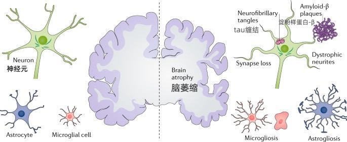

超预期寿命Outlive
Table of Contents
《精英日课》解读 https://www.dedao.cn/course/article?id=2m845Ln7q69yKOOjBlKrkebvGDYjgl&source=search
1. 医学3.0
这说明医学2.0带来的寿命改善主要是通过使用抗生素和通过改善卫生环境控制传染病实现的。换句话说，一百多年以前，大部分人死亡是因为某种*急性*的病因，比如受伤感染，而医学2.0很成功地解决了这些急性问题。现在大多数人都能活到七八十岁，人们死亡主要是因为一些慢性疾病 —— 这是医学2.0未能很好地解决的问题。
阿提亚把现在导致死亡最多的四种慢性疾病称为“四骑士” —— 对标《圣经》里代表瘟疫、战争、饥荒和死亡的天启四骑士：
- 心脏病
- 癌症
- 神经退行性疾病（比如阿尔兹海默症，也就是老年痴呆症）
- 2型糖尿病
阿提亚提出了「医学3.0」的概念，它跟2.0相比有四个特点 ——
- 重视预防而非治疗；
- 把每个患者当成独特的个体，因为每个人对比如说不同营养成分的反应是不一样的；
- 从风险管理角度去干预，而不是固定走流程；
- 不但要追求生命长度，还要追求健康度。
2. 基因的启示
研究表明，普通人是否能长寿，基因要占到20%-30%的因素；但年龄越大，基因就越重要。我们专栏前面讲丹尼尔·利伯曼的《锻炼》那本书时也说过，八十岁以前身体好不好主要看锻炼，八十岁以后身体好不好主要看基因。
阿提亚引用的说法是，如果你的兄弟姐妹中有百岁老人，你成为百岁老人的概率是普通人的十几倍；如果你的父母中有一位是百岁老人，你也会有很大的概率成为百岁老人。
对中等认知的人来说，认识到是因为基因差异也就到此为止了。毕竟基因是没法学的，人家运气好，咱不服不行。
而高认知的人会多问一个问题：基因到底是通过什么方式让这些人长寿的呢？
我打个比方。这就好比说人们听说小明的学习成绩比小刚好，就问小刚：“为什么小明成绩比你好啊？”小刚说：“因为小明家有钱，请得起家庭教师进行一对一的辅导。”如果想到这里就结束了，那肯定不是高认知。
高认知的问题是那个家教到底教了小明什么，才让小明的成绩好。是家教只是督促小明学习，还是他能提供学校没有的教学内容？如果只是督促，那我自觉学习行不行，如果有特别的教学内容，那我能不能自己去书店或者网上找到那个内容，拿回来自学？
阿提亚的策略也是如此。百岁老人的基因到底对他们做了什么？我们没有那个基因，但我们能不能用别的方法实现那个基因做的事呢？
有一个基因叫APOE，它对阿尔兹海默症有明显的影响，主要是因为它对大脑中运送胆固醇有重要作用。它有个变体还对葡萄糖代谢很有影响。
还有个基因叫FOXO3，属于转录因子，它能决定其他基因是被激活还是被表达，从而调节新陈代谢。它能开启细胞修复的任务，还可以决定什么时候清理垃圾。
你看，这两个基因就对我们很有启发。它们的存在说明第一，要想长寿，你需要关心胆固醇和葡萄糖；第二，新陈代谢、细胞修复和垃圾清理非常重要。当然科学家从别的方向入手也能得出类似的结论，但是这里你找到了底层逻辑的线索
3. 从糖到脂肪
人活着需要热量，热量来自于糖，糖来自于碳水化合物。糖有很多种，人体细胞直接使用的主要是两种所谓「单糖」 —— 葡萄糖和果糖。其他的糖都会被先分解成某种单糖再使用。负责把单糖送入各个地方使用的，就是胰岛素。
先说葡萄糖。它存在于血液之中，会流经全身，而且时刻都要保持一个平衡的浓度。一个成年男性的血液中应该总共有大概5克的葡萄糖在循环，如果达到7克，那就是糖尿病。
这个平衡是怎么实现的呢？碳水化合物消化之后，会先变成「糖原」，也就是葡萄糖的备用形态，暂时保存在骨骼肌和肝脏之中。当你正在做运动的时候，胰岛素就把血液里的葡萄糖提供给比如说肌肉细胞，生成能量。这一用，血液里的葡萄糖就少了一点，于是一部分糖原立即被转换为葡萄糖，维持平衡。
大自然的解决办法是允许我们一次吃很多糖。给糖原充值充满了之后，多余的糖会被胰岛素送到身体的其他地方，变成脂肪存储起来。如果糖原是电池，脂肪就是一个巨大的充电宝：哪怕是一个比较瘦弱的成年人，他也会有10公斤的脂肪，能存储9万卡路里的能量。
这些脂肪能让我们一天不吃饭照样有力气走路，让我们在食物匮乏的日子、甚至在严寒的日子里活下来。
胰岛素运送储备糖首选的地方是皮下。皮下脂肪是最安全的脂肪，不会给身体带来坏处。又能随时释放能量，又能保暖，其实挺好。皮下脂肪不影响代谢功能。
胰岛素会把皮下脂肪之外还多余的糖送入以下这些地方变成脂肪，从而造成各种问题 ——
- 送入肝脏，会形成非酒精性脂肪肝；
- 送入肌肉组织，会导致胰岛素抵抗；
- 送入腹部，形成内脏脂肪；
- 送入血液，会导致动脉粥样硬化；
- 送入心脏和胰腺周围，引发相关病症……
有些中年男性肚子比较大，这就是内脏脂肪多。内脏脂肪细胞会分泌某些炎症细胞因子，从而驱动炎症。而内脏脂肪又紧挨着人体的重要器官，一旦有炎症，就会增加癌症、心血管疾病和2型糖尿病的风险。
4. 非酒精性脂肪肝
健康的肝是紫色的，很干净很平滑，挺好看。肝上有了多余的脂肪，就会呈现一些橘黄色的结节，坑坑洼洼，哪怕你没有任何医学知识，一看也知道它有问题。多余脂肪对肝的影响分四步 ——
- 只是肝脏上有可见的多余脂肪，但尚未形成炎症；
- 这些脂肪形成了炎症，导致不是病毒感染引起的肝炎，叫做「非酒精性脂肪肝（NASH）」。它很多的时候没有明显的症状，但是肝已经受伤了；
- 肝上的伤痕会结疤，但同样没什么外在症状；
- 时间一长，那些疤痕累积起来，就发展成了肝硬化，问题就严重了。
不过好消息是非酒精性脂肪肝是可逆的。肝是个生命力很强的器官，如果你能比如说多锻炼、节制饮食，清除肝脏中的脂肪，炎症就会消退，肝功能还能恢复正常。
5. 胰岛素抵抗
多余的脂肪去了肌肉，就会形成「胰岛素抵抗」。这个过程是这样的。
首先是肌肉纤维中出现了一些微小的脂肪滴，脂肪滴积累得多了，肌肉就好像你吃的和牛牛排一样，其中出现白色的大理石的纹路……这种牛肉吃着好吃，但是你不希望自己长这样的肉。
这些脂肪会妨碍肌肉细胞和胰岛素之间的信号传输，从而让胰岛素更难把葡萄糖送进肌肉细胞变成能量。
我们前面说了，血液里的葡萄糖必须维持平衡。葡萄糖送不进去，那为了维护平衡，胰脏就会产生更多的胰岛素，让它们加把劲给肌肉细胞送葡萄糖。一开始的确是有效的，但终究会达到一个上限。
这时候，血液中已经有了很多很多胰岛素，可是葡萄糖水平就是下不去。于是胰岛素只能把葡萄糖送到别处，变成脂肪。于是脂肪增多。脂肪增多，胰岛素就更不容易把葡萄糖送给肌肉细胞，于是胰岛素再次升高……
这是典型的正反馈恶性循环。你体内的胰岛素越来越多，这就是胰岛素抵抗。
胰岛素同时还是一种生长信号激素，它会促进动脉粥样硬化和癌症发生。高胰岛素水平能让癌症发生率提高12倍，让老年痴呆症的发病率提高5倍，能让心血管疾病的死亡率提高6倍……
6. 果汁和水果的差别
而且我们刚刚只说了葡萄糖，现在还得说说果糖。果糖广泛存在于各种水果、玉米和很多其他植物之中，它尝起来比葡萄糖更甜，但是它不能直接在血液中变成能量。一般的说法是果糖会被肝脏转换为糖原或者葡萄糖，完了再变成能量。
阿提亚关心的是，果糖是如何变成脂肪的。
本来，人类的祖先是不能把果糖变成脂肪的。果糖变成脂肪，需要先变成尿酸才行。别的哺乳动物都有一种尿酸酶，会自动清除尿酸。如果人类也是如此，我们就可以随便喝果汁，又甜又好喝还不会胖，岂不是挺好。
但是在历史上的某个时候，我们的灵长类祖先发生了一次基因变异，不再产生尿酸酶了。在当时的环境下这是一个绝对的好消息，因为现在身体允许尿酸存在，我们就可以把果糖转化为脂肪储备起来。比如你可以夏天多吃点水果，长点膘好过冬。
其实哪怕是现在，多吃点水果也不至于太发胖，因为水果中的果糖是跟纤维和水混合在一起的，消化速度比较慢，肠道就能代谢掉。但问题是现在有果汁、有可乐这些东西。液体的果糖太容易被吸收了。更可怕的是果糖的微观代谢反馈机制跟葡萄糖不同，它不会给人一种“吃饱了”的反馈，可能你吃了很多还觉得饿，甚至上瘾！
而这就导致，一方面你会产生大量的尿酸，而尿酸过多就会导致痛风。
另一方面多余的果糖就是多余的……当然你想到了，脂肪。尤其是变成肝脏上的脂肪，于是又加剧了非酒精性脂肪肝。
没错，有些人得脂肪肝不是因为喝酒，而是因为喝可乐。
7. 心血管和胆固醇
这个过程的确跟胆固醇有关系，像现在发现的几个长寿基因都跟胆固醇有关系 —— 但是请注意，关键不在于胆固醇本身，而在于胆固醇的运输。
胆固醇是组织细胞不可缺少的，它是一种类似于脂肪的物质，不能直接溶于水，所以不能在血浆中直接运送。为了输送胆固醇，人体必须得用一种脂蛋白把它包起来，形成一个小球，就好像给快递打包一样。
这样的小球主要有两种，一种叫「高密度脂蛋白（HDL）」，它用来包裹胆固醇的分子主要是「载脂蛋白A（apoA）」；一种叫「低密度脂蛋白（LDL）」，它用来包裹胆固醇的分子是载脂蛋白B（apoB）」。
两种小球在血管中流动，都可能会撞到血管墙壁上，并且穿过内皮。高密度脂蛋白这种小球进入内皮后还会再离开，而低密度脂蛋白的小球撞到内皮后容易卡在里面。
其实不只是低密度脂蛋白，还有其他几种脂蛋白会引起动脉硬化，而所有这些脂蛋白的外层，都是这个载脂蛋白B。
载脂蛋白B包装的小球容易被血管内皮卡住，这就是人体的设计缺陷。
就好像一辆汽车没设计好，有个零件容易磨损一样。我们还是重点说低密度脂蛋白（LDL），这种小球被卡住之后会引发一系列的连锁反应，最终导致了心血管系统的崩坏。

其实这一切的发生还有一个必要条件，那就是血管内皮存在炎症。吸烟，或者高血压，或者像我们上一讲中说的内脏脂肪、胰岛素抵抗、尿酸等等都容易导致炎症。血管内皮有炎症，就更容易导致低密度脂蛋白停留。
阿提亚认为，总的原则应该是减少载脂蛋白B的存在感，这意味着LDL浓度越低越好，而且要把血脂—— 包括各种脂蛋白 —— 水平降下来。我们前面说了，代谢系统的一个问题就是胰岛素把多余的糖送入血液变成脂肪。有研究表明，只要LDL浓度没有超过正常生理需要的水平，动脉粥样硬化就可能不会发生。
8. 癌症的认识和最新治疗
我们先说几个基本事实。什么是癌症呢？简单说，癌症是细胞在不该长的地方疯狂生长，以至于形成肿瘤。
癌细胞和正常细胞有两个不同之处，这两个特点定义了癌症。
第一个特点是癌细胞在应该停止生长的时候没有停止生长。很多人认为癌细胞长得特别快，其实不是这样 —— 癌细胞的生长速度并不比正常细胞快，它们只是拒绝停下来。正常细胞收到身体信号就会停止生长或者分裂，癌细胞却不是这样。
但我们不知道为什么会这样。可能是纯粹随机的基因突变。
第二个特点是癌细胞可以从身体的一个部位转移到比如说很遥远的另一个部位，乃至于扩散到很多个部位。正常细胞根本走不了那么远。
如果癌细胞不转移，其实很多癌症是不致命的，直接把肿瘤切除就行。像乳腺癌、前列腺癌，甚至胰腺癌、结肠癌，哪怕你把那个器官都给切除了，也不会致命。
说某某人死于乳腺癌或者前列腺癌，其实都是说癌症已经转移到了其他更重要的、不可切除的部位去了，比如扩散到了肺部、大脑、肝脏甚至骨骼。
只要癌症已经转移，在50年前，患者的十年存活率是0 —— 现在他的十年存活率也是0。也就是说癌症转移意味着人不可能再多活十年。现代医学的标准是能多活五年就算治疗成功。
当然医学还是有进步的，有些新疗法作用很好。
一个是靶向药。基因组项目还是很有用的，针对一些特定癌症的特定基因，确实有一些很有效的靶向药。但这方面阿提亚没有多说，阿提亚重点讲的是免疫疗法。
免疫疗法是通过人自身的免疫机制杀死癌细胞。
历史上发生过若干次案例，一个很严重的癌症病人，没有使用什么特殊方法，只是可能因为感染了某个细菌，免疫系统被激活，癌症就奇迹般地痊愈了！这给研究者带来了无尽的希望。
那你说，我能不能主动让这个病人感染某种细菌，来激活他的免疫力，然后治愈癌症呢？一直都有医生在尝试这么做，但是几乎没有取得过成功 —— 直到最近。
具体细节我们就不讲了，我们关心的是战略问题。现在一个比较流行的方法叫CAR-T，薄世宁医生在得到专门讲过。
我这里要强调的是免疫疗法可以特别有效，但是有效的概率太低。只有1/3的癌症可以用免疫疗法治疗，而在这些可以治疗的癌症之中，也只有1/4的患者能真正受益。别人为啥就不行……你也猜到了，那可能是基因的原因。
但免疫疗法有个最大好处是只要它起作用，就能把病给你治好，而且不会反弹，它能让这种癌细胞消失。研究表明免疫疗法如果完全起作用，80%-90%的患者在15年之后仍然没有复发。这跟化疗完全不同，化疗是不可能把癌细胞杀死的。
9. 阿尔兹海默症和牙齿
左边是健康大脑，右边是病患大脑。我们重点关注神经元，也就是图中绿色的那个东西。阿尔茨海默症的神经元有两个特点，对医生来说，这两个特点*定义*了什么是阿尔茨海默症。

第一个特点是神经元外围的突触 —— 就是像章鱼伸出去的触手一样的结构 —— 附近会产生一种「淀粉样蛋白-β」，多了就会结成斑块，乃至于让神经元失去连接功能。
第二个特点是神经元的主干和核心中会出现一种「tau蛋白」，它会引发炎症。严重了，就是tau缠结（tau tangles），从而导致整个大脑的萎缩。
目前有两个假说。（即使出现了上面两个特征，某些病人的认知表现依然很好）
一个假说认为原因是脑供血不足。大脑是人体中最耗能的器官，它只占体重的2%，却消耗了20%的能量。那如果因为身体上的原因，血管退化，导致提供给大脑的血液不足，大脑得不到充分的葡萄糖和氧气，当然就会出问题……这就有可能导致痴呆症。
另一个假说认为，阿尔茨海默症是大脑的葡萄糖代谢异常导致的。从胰岛素抵抗到2型糖尿病，这些情况都会导致血糖长期偏高，而这可能伤害了大脑的血管。
如果脑供血不足或者葡萄糖代谢出问题真的是阿尔茨海默症的病因，那你保持代谢系统和心血管系统的健康就同时也在帮助大脑。
阿提亚综合各种研究的结论是对心脏、肝脏和胰脏有益就是对大脑有益。那么这就是一个身体综合治理的问题，手段还是运动、饮食、睡眠、情绪和药物。具体细节咱们后面专门讲，这里说两个有意思、很有作用、而你可能没想到的发现。
一个是牙齿健康和阿尔茨海默症之间有强烈的相关性。如果你的牙齿有问题，就会使得离大脑很近的血管长期处于炎症状态，这就对大脑不利。有人发现牙龈脓包疮菌出现在了阿尔茨海默症患者的大脑中。所以哪怕为了保护大脑，你也应该坚持刷牙并且使用牙线，而且要定期去洗牙。
还有个特别有意思的方法是去桑拿房干蒸。阿提亚调研的判断是如果你每周至少4次、每次至少20分钟，在至少摄氏82度下蒸一蒸自己，竟然能把阿尔茨海默症的风险降低65%，把急性心血管疾病的风险降低50%。这个幅度已经远超E2版本基因了。我调研发现有研究认为蒸桑拿能减少炎症 [4]，不知道是不是这个原因。如果你非常相信这个方法，在家里弄个小桑拿房也是可行的。
10. 正确的饮食习惯
第一，不要喝任何含有果糖的饮料。我们讲代谢系统的时候说了，果糖太容易变成脂肪，而饮料中的果糖太容易被身体吸收了。你吃水果没关系，但如果你是一个严肃对待营养学又有强硬意志力的人，我建议听了这一讲，从此戒断所有的含糖汽水、果汁和奶茶。
或者你可以在每年过生日的时候喝一杯。平时如果实在想喝，还不如喝杯酒。
第二，酒精没有任何健康好处。酒精带给人唯一的好处是快乐。
很多人认为每天喝少量的红酒对心血管有好处 —— 那不是真的。把“能每天喝红酒的人本来就比较健康”之类的混杂因素全部排除掉，红酒的好处根本不存在。
虽然没有健康好处，少喝点可能也没有太大坏处，更何况还有缓解压力的情绪价值。
第三，如果你非得问哪种饮食风格好，那么现有研究证据最支持的是「地中海饮食」。地中海饮食不忌讳脂肪也不强烈反对碳水，讲究多样性，其中最关键的两种东西是橄榄油和坚果。
2013年发表的一项实验中，被要求坚持吃橄榄油和坚果的两个实验组，得心血管疾病的概率分别比低脂肪饮食组低了31%和28% —— 这个效果像服用他汀类药物一样好。而且橄榄油和坚果还让认知能力有所提高，对比之下低脂肪组的认知能力有所下降。
所以，你以后可以把炒菜用的油都改成橄榄油，把坚果当零食，而且别怕脂肪。
但还是那句话，饮食的好处都是很有限的。
对大多数人来说，蛋白质的问题不是吃多了，而是吃少了。蛋白质和组成蛋白质的氨基酸是构建我们身体的材料，蛋白质摄入不足你的肌肉就会流失。蛋白质不是能量来源，我们的身体不会储存多余的蛋白质，吸收不了的就直接变成尿素排出体外了
第三种关键营养物质是脂肪。脂肪既提供热量也提供蛋白质，而且以胆固醇形式给身体提供激素，脂肪酸对新陈代谢平衡和大脑健康都很有用，你需要脂肪。
很多人认为吃脂肪会变胖，其实最能让你变胖的是大米白面那种纯碳水化合物。脂肪的好处是它把碳水和蛋白质相结合，很容易让人产生饱腹感，你不会吃太多的。
根据目前最好的知识，阿提亚把营养总结成以下四条基本规则 ——
- 不要摄入过多或过少的热量；
- 摄入充足的蛋白质和必需的脂肪；
- 获得所需的维生素和矿物质；
- 避免大肠杆菌等病原体以及汞或铅等毒素。